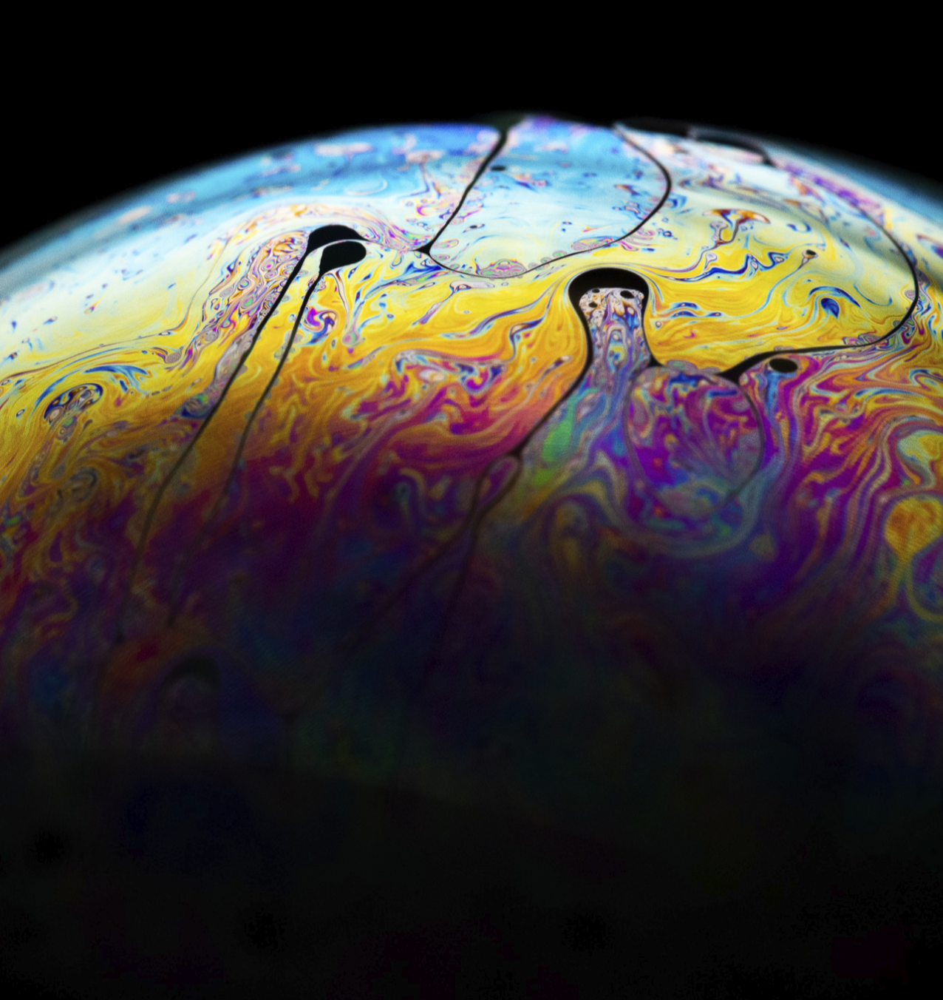

I'm a filmmaker (Watch Films Now), photographer, and designer passionate about capturing stories that connect and inspire. From short films and brand videos to portrait and sports photography, I bring creativity
and purpose to every project. My work ranges from powerful storytelling pieces like a short film exploring mental health to high-energy content for brands like Bailey's Blossoms and the Upstream Gaming Podcast.
Whether behind the camera or in the editing room, I'm always chasing the perfect balance of emotion and artistry — bringing ideas to life in a way that feels authentic and unforgettable.
What I Do
Filmmaking
Short films
Brand videos
Photography
Portraits
Sports
Micro Photography

I'll Be Fine | Short Film
Mental health, specially depression, is always depicted a certain way, the result of that is the misconception of what depression really is, what its signs are, and what a depressed person really looks like. In this short film we try to convey the true nature of depression, from a girls and boys point of view.
Texan Blood | Short Film
This hype video was made to give the football team recognition for their hard work and to promote the homecoming game where it was showcased.
NHSLIVESCORES | SEASON ENDING
From October of 2021 to May of 2022 I created an Instagram account and Twitter that broadcasts live scores of high school sports games to all of its followers.This allowed family members and friends to stay up-to-date with their favorite school teams even when they can't be there in person. This was all possible with collaboration of multiple people and school organizations. From the Media Production Academy to teacher and coaches.